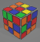

|  CubeHub | Why CubeHub? Learn now Sign up, it's free! Sign in |

Hi , my name is Cubastic and today I will teach you how to solve a 3x3 Rubik's cube. The technique I'm about to show you is really easy and absolutely everyone can learn it. I can guarantee that after watching all 4 parts of this tutorial you will easily solve a Rubik's cube no matter how scrambled it is. And if you already know how to solve a Rubik's cube this method will be really useful because with it you'll be able to teach your friends, your parents, your siblings or classmates. Let's go. First, let's learn what the Rubik's cube consists of. It has 6 faces and therefore 6 colours. White, yellow, green, blue, red and orange. It's really important to remember that white will always be opposite yellow, blue opposite green and red opposite orange. That is due to the Rubik's cube structure. And no matter how you turn or scramble it - white center piece will always be opposite yellow, blue opposite green and red opposite orange. It's also really important to know that a Rubik's cube has 3 layers. To determine which layer is which just pick up the Rubik's cube and the lowest layer will be called the first layer. The top layer is called the third layer and middle one is the second layer. So, again-the first layer, the second layer and the third layer. Don't confuse layers with faces. Now let's diassemble the Rubik's cube and see what elements it has. There are three types of elements and the first one is the central axis. As you can see all center pieces are fixed and they cannot move relative to another. The center piece has only one color. We also have the edge pieces, which have two colours, like this one for example has red and white. This is what it looks like inside the cube. And the corner elements, like this one for example, they have three colours, this one has blue, white and red and this is, again, what it looks like inside a cube. It's really important to learn the pieces and not to confue them witheach other, I will be calling them by their names and so should you. Now, when we know what the Rubik's cube consists of let's move on to the turns. The sides of a cube could be turned in two ways: clockwise and counterclockwise. There are 6 sides and there are labels for turning each of them. Turning right side clockwise is labeled with letter R. The apostrophe means <<prime>> and it means turning counterclockwise, like R prime. And the same goes with the left face. Left clockwise is L and left counterclockwise is L'. Front face clockwise turn is labeled with letter F, and counterclockwise turn is F,. The sie can be turned twice and when that happens the letter has number 2 next to it. For example U or the up face 2. U2 means turning the up face two times. And it doesn't matter which direction you're going, the result will always be he same. So in this method you'll use only four sides. Right-R and R', Left-l and L', Front-F and F', and Up-U and U'. Let'sa have a little practice. Take a solved Rubik's cube in front of you and do the following combination: R which is right face clockwise, U which is up face clockwise, and then do the opposite R' or right face counterclockwise and U' which is up face counterclockwise. These four moves will be the main moves of this whole solving method. It's hard to beleive, but the only thing you'll need to do in order to solve a Rubik's cube is to learn these four moves. Let's practice a bit more. R, U, R', U'. Again. R, U, R', U'. To get more comfortable hod the cube the correct way: put three fingers on the top of the right side, on these three pieces, then it will be much easier to turn: Right, Up, Right counterclockwise, Up counterclockwise. After repeating this combo six times you'll return the cube to it's originaal position. So you know all the necessary info to start solving the Rubik's cube. Now you know what this puzzle consists of, how it works and how to turn it's sides. Now
In this video you have learnt the first part of Rubik's cube solving which is making a cross.